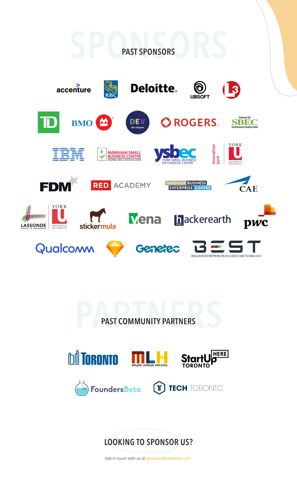
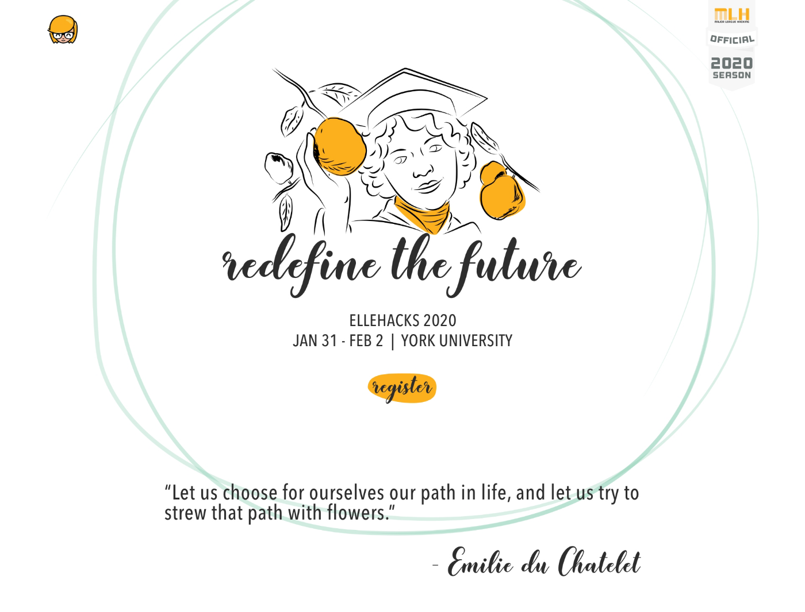
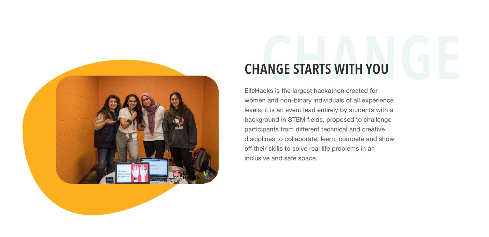
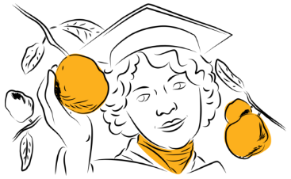

Intro
The keywords provided were "fun," "inviting," and "modern." I was asked to give a fresh, new look to the brand, while still keeping the page familiar to previous visitors. For context, Ellehacks is a yearly run hackathon so every year, the site is updated and refreshed to reflect that aspect.

Tools/software used: Sketch, Adobe Illustrator
Process - Timeline, Mockups and Feedback
The first thing I did was gather some basic and important information:
- How many pages or sections were required
- What the heirarchy of information was, i.e. the importance of certain sections, etc.
Once that was approved, we decided on a colour palette and decided that the colour of the year was yellow.
I played around with abstract shapes, lines, and the colour of the year (yellow). This was a one page site which meant I had to include everything on this page without overwhelming visitors with too much information. I started by breaking it out in different sections based on importance and/or priority. From there, I worked my way up to what you see here. Even if this site consists of several sections, it feels smooth to navigate which makes for a good user experience.
The woman of the year was Alice Ball, so I illustrated her portrait using Adobe Illustrator and added it to the hero portion of the site.
The gallery section, I included an abstract shape behind the carousel. It made the section seem more lively and fun. The hosts had requested that past sponsors be displayed on the page. I decided to integrate this by using the company logos. I also featured abstract lines on the footer, which really brought the entire design together.

Colours
- #FCB01D
- #FFF
Gallery


